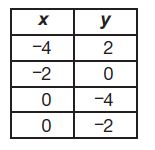
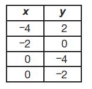

Mathematics ExamSheet
Time
- Marty has $80 to spend at a sporting goods store. He will spend $56 on a shirt, and then buy some
darts. Each box of darts costs $6. He wants to buy as many boxes as possible. Which equation shows
how to find the number of boxes of darts, x, he can buy?
A. 80 = 56 + 6x
B. 80 = 56 - 6x
C. 80 = (56)(6x)
D. 80 =56/6x
-
Use the figure to answer the question below.
What is the measure of angle x in the triangle?
A. 30°
B. 60°
C. 80°
D. 150°
-
Use the figure below to answer the question.
Lines a and b are parallel. Line c is a transversal. Which statement is true?
A. m<1 # m<4, because they are opposite angles
B. m<1 = m<6, because they are supplementary angles
m<1 # m<8, because they are adjacent angles
D. m<1 = m<4, because they are vertical angles
-
Which expression represents 4 less than twice a number, n ?
A. 4 - n
B. n - 4
D. 2n - 4
-
Use the table below to answer the question.
The table shows Katelyn’s bowling scores for a four-week time period. Her mean bowling score for
the four weeks was 136. She bowled 126 the fifth week. What will be the change from the 4-week
to the 5-week mean?
A. decrease by 10
B. decrease by 2
C. stay the same
D. increase by 3
- Use the graph and table below to answer the question.

The circle graph shows the percent of students involved in each activity. The table shows the number
of students in each activity. Which statement is caused by a misrepresentation of data in the circle
graph?
A. Students are involved in clubs the least.
B. Students are involved in music the most.
C. Students are involved in three activities.
D. Students are involved in 180 percent of the activities.
- What is the value of 12 + 2(12 - 9)2?
A. 24
B. 30
C. 84
D. 126
-
What is the value of 2/3+(-1/6)?
A. (-1/2)
B. 1/3
C.1/2
D.5/6
- Which expression has a value of - 2?
A.|2|+|-4|
B.|-2|-|-4|
C.Undifined
D.none of the above
- What is the shape of each base of a cylinder?
A.circle
B .rectangle
C. triangle
D. square
-
What is the area, in square centimeters, of the rectangle shown below?

A. 15
B.17
C. 30
D .34
- Simplify the expression below.
12ab + 8ab +5ab
A 3ab
B 25ab
C 25(3ab)
D 25 + ab
- Which situation is best represented by the expression 2c - 5 ?
A Alicia walked 2 miles fewer than 5 times the number of miles, c, Courtney walked.
B Alicia walked 5 miles fewer than 2 times the number of miles, c, Courtney walked.
C Alicia walked 2 more than 5 times the number of miles, c, Courtney walked.
D Alicia walked 5 more than 2 times the number of miles, c, Courtney walked.
- In the diagram below, line segment l and line segment m intersect at the center of the
circle. What is the measure of < x?
A 120°
B 133°
C 137°
D 143°
- Solve the equation below for x.
9(x - 5) = 4x - 5
A 8
B 10
C -8
D -10
- If P= a 2 + a - 1 and R = –a - 1, which expression represents P + R ?
A a2+2
B a2-2
C a2-2a
D a2-2a+2
- Kevin reflects square ABCD on a coordinate plane over the y-axis to create
image A’B’C’D’. Which property changed when he created image A’B’C’D’?
A the measure of < ABC
B the area of square ABCD
C the position of figure ABCD
D the perimeter of square ABCD
- Simplify the expression below.
(x2Y3)(x4Y2)
A x4Y6
B 2x8Y6
C x8Y6
D 2x5Y6
-
Which is the name of the expression shown below?
2X2Y- 5X +3
A term
B equation
C cofficient
D polynomial
- Which of the following is closest to
0.0432?
A. 4x10-2
B.4x10-1
C.4x101
D.4x102
- The graph below shows a relationship
between x and y.
Which of the following equations best
represents this relationship?
A. y=2x
B. y=x + 2
C.y=1/2x+2
D.y=2x+1/2
- Lines m, n, and l are parallel. Line w
intersects each line, as shown in the
diagram below.
Based on the angle measures in the
diagram, what is the value of x ?
A. 20
B. 30
C. 60
D. 120
- Quadrilateral EFGH is rotated 90°
clockwise about the origin to create
quadrilateral JKLM. Both quadrilaterals
are shown on the coordinate plane
below.

What is the measure of < J ?
A. 82°
B. 88°
C. 94°
D. 96°
- A 9-foot flagpole cast a shadow 6 feet
long, and at the same time, a nearby
tree cast a shadow 14 feet long, as
shown below.
What is x, the height of the tree?
A. 7 feet
B. 14 feet
C. 17 feet
D. 21 feet
- Which model is not a function?
A.
B. 
C.
D
- The choir director set up chairs for the concert with an equal number of rows and columns.
The number of chairs in each row and column is represented by the algebraic expression √y ,
where y is the total number of chairs. What is the number of chairs in each row and
column if y = 81 chairs?
A. 3 chairs
B. 9 chairs
C. 40.5 chairs
D. 162 chairs
- Rectangle LOSP is shown below. The lengths, in units, of some of the line segments are also
shown. Line segments MQ and NR are perpendicular to line segment LO.
 Which shape is similar to rectangle LOSP?
Which shape is similar to rectangle LOSP?
A. LMQP
B. LNRP
C. MNRQ
D. OSRN
- Paul creates a scatter plot with a negative association. The x-axis of the scatter plot is titled,
"Minutes Spent at Mall". Which label is most likely the title of the y-axis of Paul’s scatter plot?
A. Distance Walked
B. Money Available to Spend
C. Number of Movies Seen
D. Number of Stores Visited
- Camille placed blocks on a table in rows and columns. All the rows and columns had the same
number of blocks in them and formed a square. Which could be the total number of blocks
Camille placed on the table?
A. 111 blocks
B. 121 blocks
C. 181 blocks
D. 222 blocks
- Which expression is equivalent to(9 -2 )8
A.-81
B. 1/916
C. 1/910
D. 81 8
- Which statement about √2 and π/2 is true?
A. Since half of 2 is 1 and half of 3 is 1.5, then √2 < π/2
B.Since half of 2 is greater than 1/2 of 3.14, then √2 >π/2
C.Since √2 is slightly less than 1.5 and half of &pi is slightly more than 1.5, then √2 < π/2
D.Since √2 is greater than 1 and half of &pi is slightly less than 2, then √2 >π/2
- Use the number line below to answer the question.
Which point on the number line is the best approximation for √6?
A. point W
B. point X
C. point Y
D. point Z
- What is the value of 5 4 x 5 -6
A. -25
B. 1/-25
C.1/25
D.25
- Which comparison is true?
A.4 < √18 < 4.5
B.4.5 < √18 < 5
C.8.5 < √18 < 9
D. 17 < √18 < 19
- Each day of the month, Carl earns an allowance, in cents, equal to the square of that date of
the month. Which is a number of cents Carl could earn in a single day?
A. 21
B. 31
C. 64
D. 111
- Which set of ordered pairs models a function?
A. {(2, 9), (7, 5), (3, 14), (2, 6)}
B. {(5, 10), (5, 15), (5, 20), (5, 25)}
C. {(–1/2, – 1/3), (1/2, –1/4), (–1/2, –1/5), (1/2, –1/6)}
D. {(–10, 20), (–20, 30), (–30, 40), (–40, 10)}
- A company used about 7.4 × 10 5 sheets of paper in a month. Of the paper used during the
month, the accounting department used about 8.9 × 10 3 of the sheets. About how many
sheets of paper were used by other departments during the month?
A.1.5 x 10 2
B.1.5 x 10 3
7.3 x 10 4
7.3 x 10 5
- For which equation is 3√36 the solution?
A.X3=36
B.X2=36
C.3√x=36
D.√x=36
- Use the two functions below to answer the question.

Which statement about the slopes of the functions is true?
A. The slopes of both functions are negative.
B. The slopes of both functions are positive.
C. The slope of function A is negative and the slope of function B is positive.
D. The slope of function A is positive and the slope of function B is negative.
- Caleb has a piece of rectangular paper that is 12 inches wide by 16 inches long. He drew a
straight line along the diagonal of the paper. What is the length of the line Caleb drew?
A. √28 inches
B. √112 inches
C. 20 inches
D. 28 inches
- Use the graph of the function below to answer the question.
Which description of the function is true?
A. The function is linear and always increasing.
B. The function is nonlinear and always increasing.
C. The function is decreasing from negative infinity to –1 and increasing from –1 to infinity.
D. The function is decreasing from negative infinity to –2 and increasing from –2 to infinity.
- Which equation has infinitely many solutions?
A.x=1/4x+3/4
B.1/3x-5=2/3x-5
C.1/2(1+4x)=2x-3
D.3-4x=-6(2/3x-1/2)
- Curt jogged on a path that was 2 miles long, took a break, and then jogged back along the
same path to where he started. He jogged at different speeds for different distances along the
path as shown in the graph.
Between which times did Curt jog the fastest?
A. 0 minutes and 10 minutes
B. 10 minutes and 25 minutes
C. 25 minutes and 30 minutes
D. 30 minutes and 60 minutes
- Use the system of two linear equations graphed below to answer the question.
What is the solution to the system of linear equations?
A. (–5, –4)
B. (1, 3.5)
C. y = –x + 1
D. y = 3.5x + 1
- What is the solution to the equation
1/3(x + 2) =2/3 x + 4?
A. x = –10
B. x = –3
C. x = 6
D. x = 12
- A company puts 36 cans into each box they send to a store. Each can has a radius of
1.5 inches and a height of 6 inches. What is the approximate total volume, in cubic inches, of
the cans in each box the company sends to a store? Use 3.14 for π
A. 42.39 cubic inches
B. 56.25 cubic inches
C. 1,526.04 cubic inches
D. 2,034.72 cubic inches
- Which table represents a linear function?
A.
B.
C.
D.
- Use the linear function in the table below to answer the question.
Which statement about the function in the table and the line represented by
y = 6 is true?
A. The lines do not intersect.
B. The lines have the same y-intercept.
C. The lines both cross through the origin.
D. The lines both cross the x-axis but not the y-axis.
- Glen spends a total of 9 hours writing a paper and finishing a project. He spends x hours on
the paper and y hours finishing the project. Glen spends 1(1/2)more hours on the paper than he
spends on the project. The equations below can be used to find how many hours he spends on
the paper and finishing the project.
x + y = 9
x – y = 1(1/2)
How many hours does Glen spend writing the paper?
A. 3(1/4)hours
B. 3(3/4) hours
C.5(1/4) hours
dD.5(1/3)hours
- Stanley marked two points on the grid below to show the locations of the fiction section,
point F, and the travel section, point T, in a bookstore.
What is the shortest distance, in units, between the fiction section and the travel section in the
bookstore?
A. √146
B. √242
C. 16
D. 25
A. 80 = 56 + 6x
B. 80 = 56 - 6x
C. 80 = (56)(6x)
D. 80 =56/6x
What is the measure of angle x in the triangle?
A. 30°
B. 60°
C. 80°
D. 150°
Lines a and b are parallel. Line c is a transversal. Which statement is true?
A. m<1 # m<4, because they are opposite angles
B. m<1 = m<6, because they are supplementary angles
m<1 # m<8, because they are adjacent angles
D. m<1 = m<4, because they are vertical angles
A. 4 - n
B. n - 4
D. 2n - 4
The table shows Katelyn’s bowling scores for a four-week time period. Her mean bowling score for the four weeks was 136. She bowled 126 the fifth week. What will be the change from the 4-week to the 5-week mean?
A. decrease by 10
B. decrease by 2
C. stay the same
D. increase by 3
The circle graph shows the percent of students involved in each activity. The table shows the number of students in each activity. Which statement is caused by a misrepresentation of data in the circle graph?
A. Students are involved in clubs the least.
B. Students are involved in music the most.
C. Students are involved in three activities.
D. Students are involved in 180 percent of the activities.
A. 24
B. 30
C. 84
D. 126
A. (-1/2)
B. 1/3
C.1/2
D.5/6
A.|2|+|-4|
B.|-2|-|-4|
C.Undifined D.none of the above
A.circle
B .rectangle
C. triangle
D. square
A. 15
B.17
C. 30
D .34
12ab + 8ab +5ab
A 3ab
B 25ab
C 25(3ab)
D 25 + ab
A Alicia walked 2 miles fewer than 5 times the number of miles, c, Courtney walked.
B Alicia walked 5 miles fewer than 2 times the number of miles, c, Courtney walked.
C Alicia walked 2 more than 5 times the number of miles, c, Courtney walked.
D Alicia walked 5 more than 2 times the number of miles, c, Courtney walked.
A 120°
B 133°
C 137°
D 143°
9(x - 5) = 4x - 5
A 8
B 10
C -8
D -10
A a2+2
B a2-2
C a2-2a
D a2-2a+2
A the measure of < ABC
B the area of square ABCD
C the position of figure ABCD
D the perimeter of square ABCD
(x2Y3)(x4Y2)
A x4Y6
B 2x8Y6
C x8Y6
D 2x5Y6
2X2Y- 5X +3
A term
B equation
C cofficient
D polynomial
A. 4x10-2
B.4x10-1
C.4x101
D.4x102
Which of the following equations best represents this relationship?
A. y=2x
B. y=x + 2
C.y=1/2x+2
D.y=2x+1/2
Based on the angle measures in the diagram, what is the value of x ? A. 20
B. 30
C. 60
D. 120
What is the measure of < J ?
A. 82°
B. 88°
C. 94°
D. 96°
What is x, the height of the tree?
A. 7 feet
B. 14 feet
C. 17 feet
D. 21 feet
A.
B.
C.
D
A. 3 chairs
B. 9 chairs
C. 40.5 chairs
D. 162 chairs
Which shape is similar to rectangle LOSP? A. LMQP
B. LNRP
C. MNRQ
D. OSRN
A. Distance Walked
B. Money Available to Spend
C. Number of Movies Seen
D. Number of Stores Visited
A. 111 blocks
B. 121 blocks
C. 181 blocks
D. 222 blocks
A.-81
B. 1/916
C. 1/910
D. 81 8
A. Since half of 2 is 1 and half of 3 is 1.5, then √2 < π/2
B.Since half of 2 is greater than 1/2 of 3.14, then √2 >π/2
C.Since √2 is slightly less than 1.5 and half of &pi is slightly more than 1.5, then √2 < π/2
D.Since √2 is greater than 1 and half of &pi is slightly less than 2, then √2 >π/2
Which point on the number line is the best approximation for √6?
A. point W
B. point X
C. point Y
D. point Z
A. -25
B. 1/-25
C.1/25
D.25
B.4.5 < √18 < 5
C.8.5 < √18 < 9
D. 17 < √18 < 19
A. 21
B. 31
C. 64
D. 111
A. {(2, 9), (7, 5), (3, 14), (2, 6)}
B. {(5, 10), (5, 15), (5, 20), (5, 25)}
C. {(–1/2, – 1/3), (1/2, –1/4), (–1/2, –1/5), (1/2, –1/6)}
D. {(–10, 20), (–20, 30), (–30, 40), (–40, 10)}
B.1.5 x 10 3
7.3 x 10 4
7.3 x 10 5
A.X3=36
B.X2=36
C.3√x=36
D.√x=36
Which statement about the slopes of the functions is true?
A. The slopes of both functions are negative.
B. The slopes of both functions are positive.
C. The slope of function A is negative and the slope of function B is positive.
D. The slope of function A is positive and the slope of function B is negative.
A. √28 inches
B. √112 inches
C. 20 inches
D. 28 inches
Which description of the function is true?
A. The function is linear and always increasing.
B. The function is nonlinear and always increasing.
C. The function is decreasing from negative infinity to –1 and increasing from –1 to infinity.
D. The function is decreasing from negative infinity to –2 and increasing from –2 to infinity.
A.x=1/4x+3/4
B.1/3x-5=2/3x-5
C.1/2(1+4x)=2x-3
D.3-4x=-6(2/3x-1/2)
Between which times did Curt jog the fastest?
A. 0 minutes and 10 minutes
B. 10 minutes and 25 minutes
C. 25 minutes and 30 minutes
D. 30 minutes and 60 minutes
What is the solution to the system of linear equations? A. (–5, –4)
B. (1, 3.5)
C. y = –x + 1
D. y = 3.5x + 1
A. x = –10
B. x = –3
C. x = 6
D. x = 12
A. 42.39 cubic inches
B. 56.25 cubic inches
C. 1,526.04 cubic inches
D. 2,034.72 cubic inches
A.
B.
C.
D.
Which statement about the function in the table and the line represented by y = 6 is true?
A. The lines do not intersect.
B. The lines have the same y-intercept.
C. The lines both cross through the origin.
D. The lines both cross the x-axis but not the y-axis.
x – y = 1(1/2)
How many hours does Glen spend writing the paper?
A. 3(1/4)hours
B. 3(3/4) hours
C.5(1/4) hours
dD.5(1/3)hours
What is the shortest distance, in units, between the fiction section and the travel section in the bookstore?
A. √146
B. √242
C. 16
D. 25